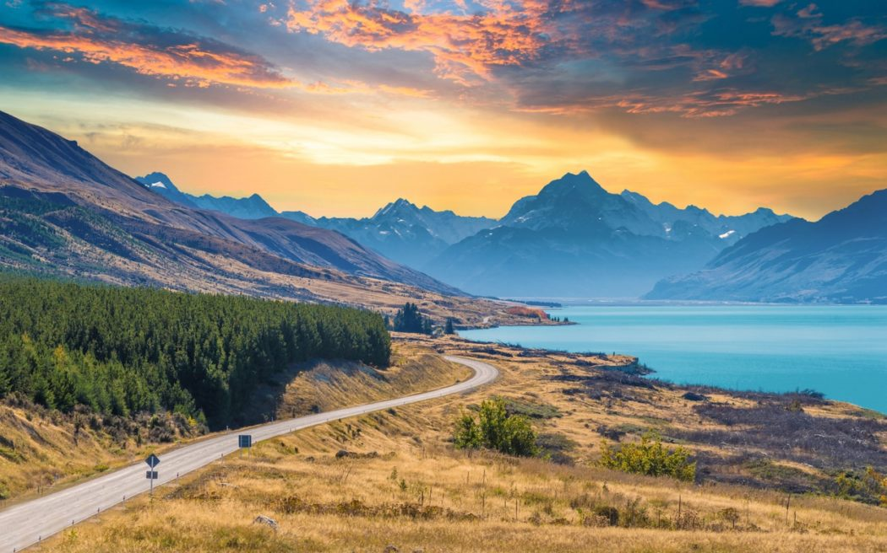
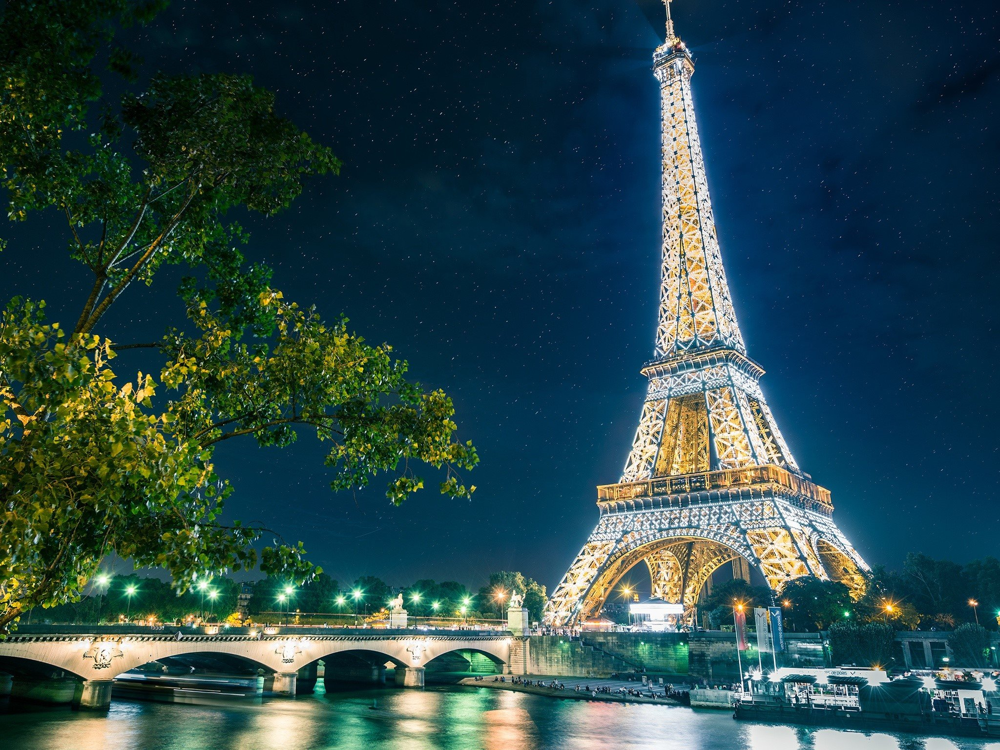
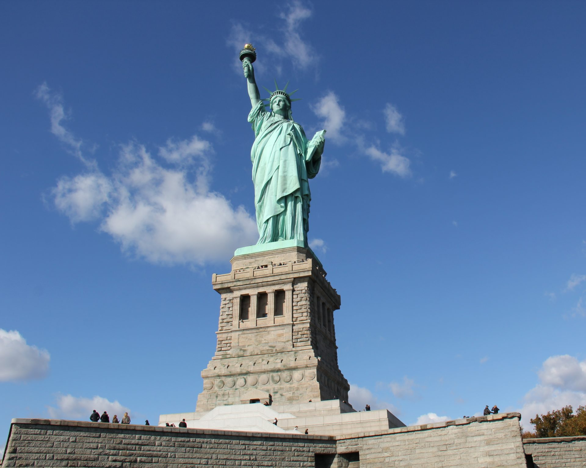
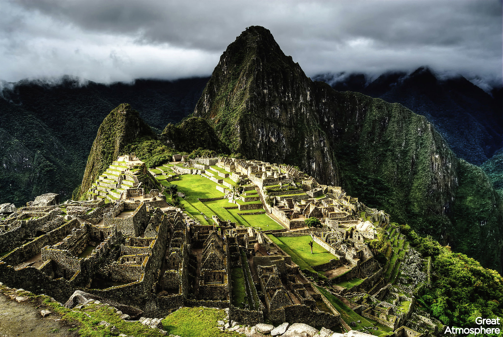
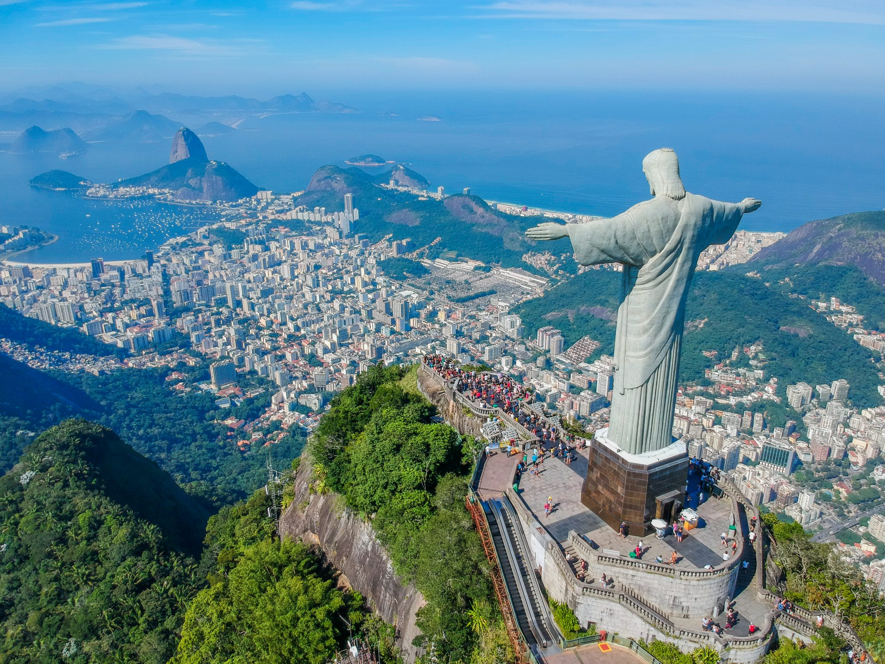

Melhores Países para Viajar
Explore as nossas sugestões e encontre o destino perfeito para a sua próxima aventura! Vai ser incrível!
Japão

Uma fascinante mistura de tradição e modernidade, com templos milenares, jardins serenos e cidades futuristas. A comida é maravilhosa!
(Sugestão: Visite Kyoto na primavera!)
Itália

Famosa por sua história rica, culinária deliciosa, arte renomada e paisagens deslumbrantes. Ah, e tem o Coliseu!
A melhor parte é a Comida. É impossivel comer mal!
Nova Zelândia
Um paraíso para os amantes da natureza e da aventura, com paisagens que parecem de outro planeta. Onde filmaram o Senhor dos Anéis!
Paris, França
A "Cidade Luz" encanta com sua arquitetura icônica, museus de renome mundial, charmosos cafés e uma atmosfera romântica inigualável. Não deixe de provar os croissants!
(Sugestão: Faça um piquenique às margens do Sena ao pôr do sol!)
Nova York
A metrópole que nunca dorme! Explore arranha-céus gigantescos, assista a espetáculos na Broadway e sinta a energia vibrante de Times Square. É um caldeirão cultural.
(Sugestão: Caminhe pelo Central Park durante o outono!)
Machu Picchu
A lendária "Cidade Perdida dos Incas", uma maravilha arquitetônica aninhada nas montanhas. É um destino imperdível para quem busca história, cultura e paisagens de tirar o fôlego.
(Sugestão: Contrate um guia local para entender a história inca!)
Rio de Janeiro
Conhecida por suas paisagens deslumbrantes, praias icônicas como Copacabana e Ipanema, e uma energia contagiante. Samba, natureza e alegria em um só lugar.
(Sugestão: Suba ao Pão de Açúcar ao entardecer para uma vista espetacular!)